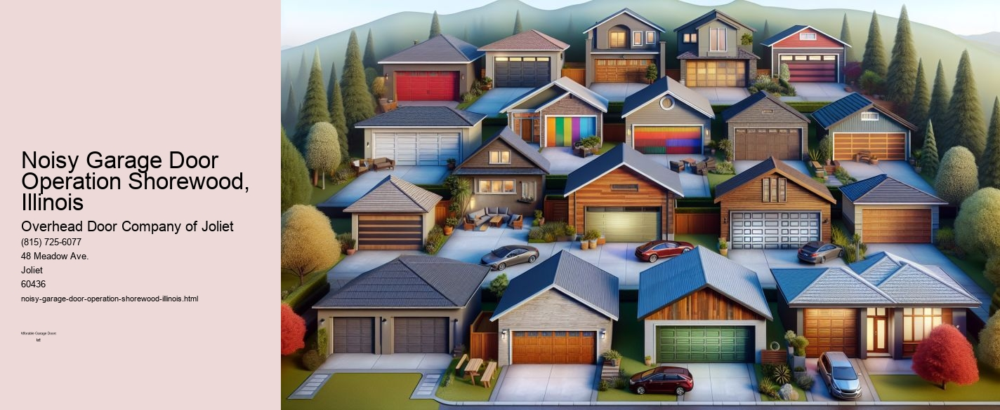

This article needs additional citations for verification. (September 2021) |

Understanding Noisy Garage Door Operations in Shorewood, Illinois
In the picturesque town of Shorewood, Illinois, where the gentle rustle of leaves and the serene flow of the DuPage River create a tranquil ambiance, the last thing any homeowner wants is the persistent clatter of a noisy garage door. Yet, for many residents, the sound of a garage door can sometimes resemble a cacophony more suited to a construction site than a peaceful suburban neighborhood. Understanding the causes and solutions for a noisy garage door is essential for maintaining the tranquility and comfort of ones home.
The Causes of Noisy Garage Doors
A garage doors operation involves many moving parts, and with time, these components can wear down, leading to increased noise. One of the most common culprits is the doors rollers. Over time, rollers can become worn or misaligned, especially if they are made of metal. Metal rollers tend to create more noise compared to their nylon counterparts, which operate more quietly.
Another significant source of noise is the garage door opener itself. Chain-driven openers, while durable and cost-effective, are notorious for being loud. On the other hand, belt-driven openers are much quieter, making them a preferred choice for homeowners seeking peace. Furthermore, the doors springs, which bear much of the weight, can also create noise if they become loose or if lubrication is insufficient.
Solutions for a Quieter Garage Door
Addressing a noisy garage door often begins with regular maintenance. Homeowners in Shorewood should consider periodic inspections of their garage doors, checking for signs of wear and ensuring that all components are adequately lubricated. Using a silicone-based lubricant on the rollers, hinges, and springs can greatly reduce noise levels. Its important to avoid using grease, as it can attract dust and debris, exacerbating the problem over time.
For those with metal rollers, upgrading to nylon rollers can make a significant difference in noise reduction. Nylon rollers are not only quieter but also require less maintenance and have a longer lifespan. Similarly, for those using chain-driven openers, switching to a belt-driven model can drastically reduce noise levels, creating a more peaceful environment.
Additionally, ensuring that the garage doors tracks are clean and correctly aligned is crucial. Misaligned tracks can cause the door to jerk or make grinding noises. Regularly cleaning the tracks and tightening any loose bolts can help maintain smooth operation.
Professional Assistance
While many homeowners in Shorewood might be inclined to tackle garage door maintenance themselves, there are times when professional assistance is advisable.
Conclusion
In the serene setting of Shorewood, Illinois, a noisy garage door can be a jarring disruption. However, by understanding the common causes and implementing straightforward solutions, homeowners can enjoy the benefits of a quieter and more efficient garage door operation. Whether through regular maintenance or professional intervention, addressing the noise not only enhances the comfort of ones home but also contributes to the overall well-being of the community. In doing so, residents can continue to relish the peace and beauty that Shorewood has to offer.
Dented or Damaged Panels Shorewood, IllinoisThis article needs additional citations for verification. (September 2021) |